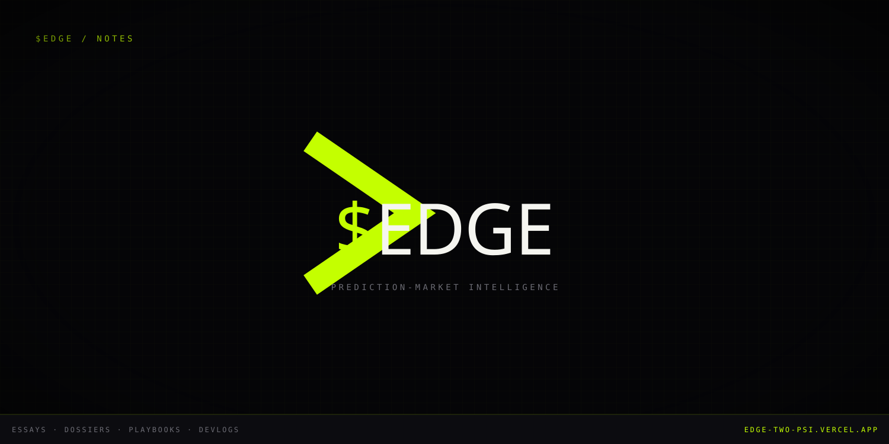
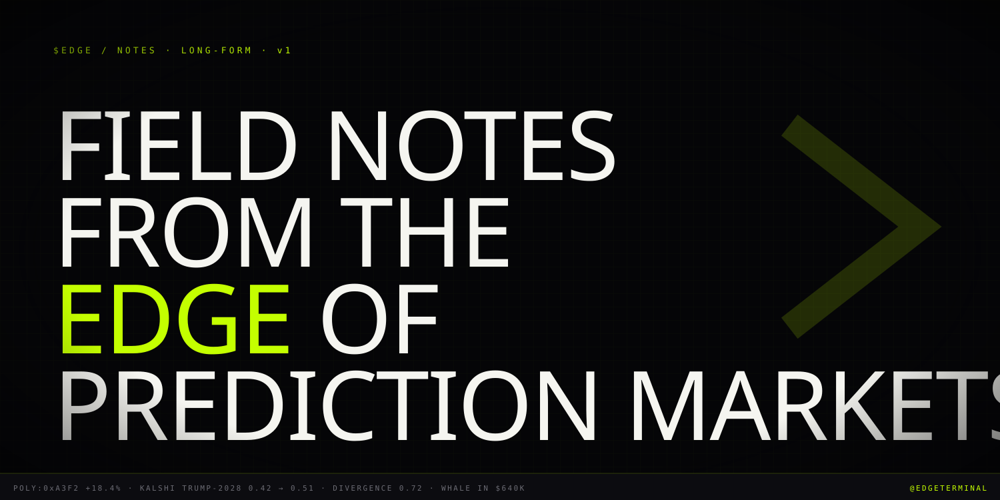

03.11 / Social Asset Pack · Medium
Medium. Long form.
Publication: $EDGE / Notes. 1500×750 masthead logo, 1500×750 cover. Long-form essays, whale dossiers, divergence playbooks — the credibility surface, not the conversion surface.
Publication Logo
03.11.01 · 1500×750

1500 × 750 · SVG · masthead
Cover Image
03.11.02 · 1500×750

1500 × 750 · SVG · homepage hero + first article cover
Identity
03.11.03
publication
$EDGE / Notes
Tagline: Field notes from the edge of prediction markets. Money. Mouth. Edge. Long-form essays, dossiers, and devlogs from the team building the $EDGE terminal. URL: medium.com/edge-notes Categories: Cryptocurrency · Finance · Politics · Data Science Cadence: every other Tuesday, 06:00 ET Writers: brand-account (@edgeterminal)
First Article (pinned)
03.11.04
article 1 · pin to publication
Money, Mouth, and the Edge Between Them
Subtitle: Why prediction markets out-call the pollsters, and how the gap between price and sentiment became the cleanest trade signal we have. Tags: prediction markets · polymarket · kalshi · trading · finance · politics · data · web3 Cover: banner.svg (1500×750) Reading time: 9–12 minutes (~2200 words) ABSTRACT (preview): In November 2024, Polymarket's Trump-Harris price moved hours before the networks called the race. By the time CNN ran the chyron, $4M had already crossed the book on the outcome the polls said was a coin flip. This was not a fluke. It was a phase shift. Prediction markets — for the first time in their thirty-year flirtation with the mainstream — became the source. We've spent the last six months building the terminal we wanted to use for these markets. What follows is the thesis behind it. OUTLINE I. The pollsters lost the network II. What "Money" means in a prediction market III. What "Mouth" means IV. The Edge — divergence as signal V. What we built (terminal mention, brief) VI. What we're not (defensive paragraph) Closing — cadence promise, brand sign-off
Follow-up Article Slate
03.11.05 · next 5
| # | Working title | Format | Length |
|---|---|---|---|
| 02 | Anatomy of a Polymarket whale: 0xA3F2 and the Trump-Powell trade | Dossier | ~1800w |
| 03 | Sentiment divergence: a worked playbook | Tutorial | ~2200w |
| 04 | Kalshi vs Polymarket: how to read cross-venue arbitrage | Reference | ~1500w |
| 05 | Devlog 001: shipping the divergence radar | Build log | ~1200w |
| 06 | What prediction markets get wrong (and why that's the trade) | Essay | ~2400w |
Setup Notes
03.11.06
Create the publication at
medium.com/edge-notes. Tagline + description from bio.md.Upload
pfp.svg as masthead (export to 1500×750 PNG). banner.svg as homepage hero.Add the brand-account user as the sole writer. Contributor applications closed for first 90 days.
Publish Article 1 ("Money, Mouth, and the Edge Between Them"). Pin to publication home.
Add the publication's RSS feed to Substack-style mirror at www.thepolyedge.com/notes (Medium content + canonical SEO via the canonical-URL header on each post).
Cadence: every other Tuesday, 06:00 ET. Cross-post abstract to X, LinkedIn, Discord, Telegram with the article link.